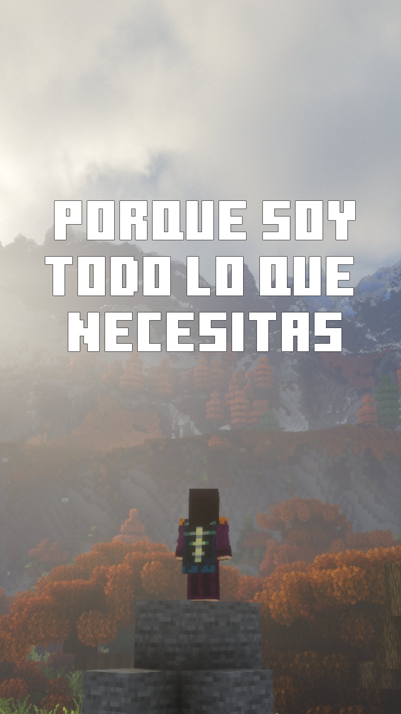
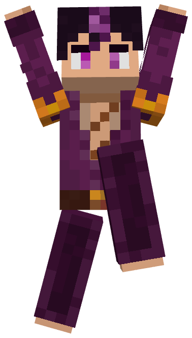

Nuestro modpack
Iron Souls Overlords
Un modpack de fantasía oscura con jefes, armas y mucho más, con una historia profunda, su propio lore y un montón de misiones.
- Aventura
- Desafiante
- Combate
- Magia
- Misiones
- Minecraft
- Java 1.20.1
- Plataforma
- Forge
- Juega en
- Cliente y servidor
Patreon
Apoya el desarrollo de los modpacks Iron Souls y entra a ver las ventajas que hay disponibles.
Apoyar en PatreonDiscord
Charla con la comunidad, resuelve dudas y entérate de las novedades antes que nadie.
Unirme al servidorWiki
Aquí vive la información de Iron Souls Overlords. El lore ya se puede leer; el resto de secciones llegan pronto.
Próximamente
Jefes
Todo sobre los jefes del modpack.
PróximamenteArmas
Armas, armaduras y equipo.
PróximamenteLore
La historia y el mundo de Iron Souls.
DisponibleMisiones
Misiones y objetivos paso a paso.
PróximamenteLore
La historia de Iron Souls, ordenada por partes. Elige un texto del índice y cambia entre español e inglés cuando exista traducción.
Información
Iron Souls™ es un estudio de desarrollo de modpacks experimentado, el cual está especializado en modpacks RPG. Te esperamos en Discord, donde podrás unirte a nuestra familia y conversar con los desarrolladores directamente. ¡Esperamos verte pronto!

IRON SOULS™
¿Necesitas ayuda?
Escribe tu correo, elige una categoría y cuéntanos qué te pasa. Te responderemos pronto.